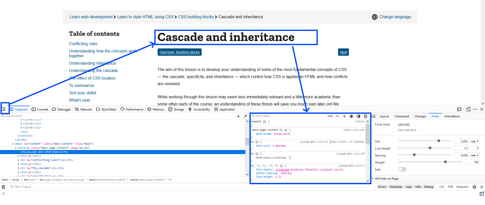
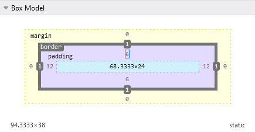
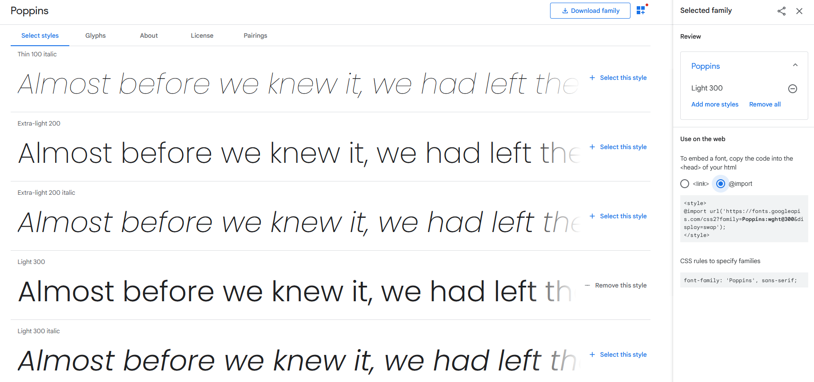
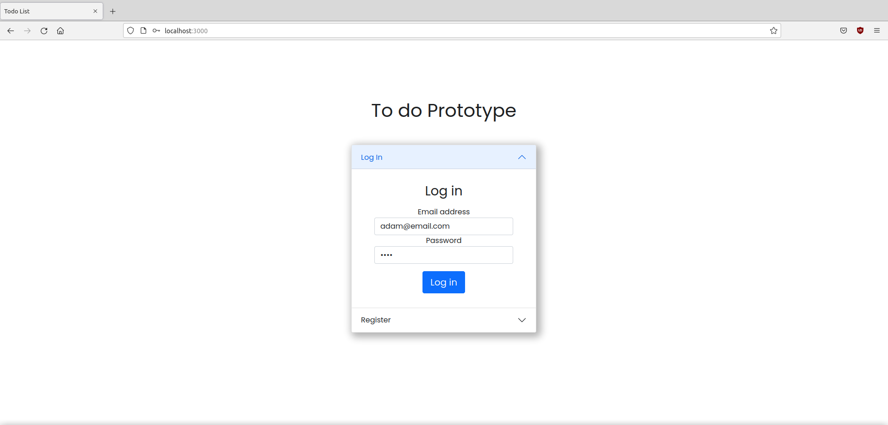
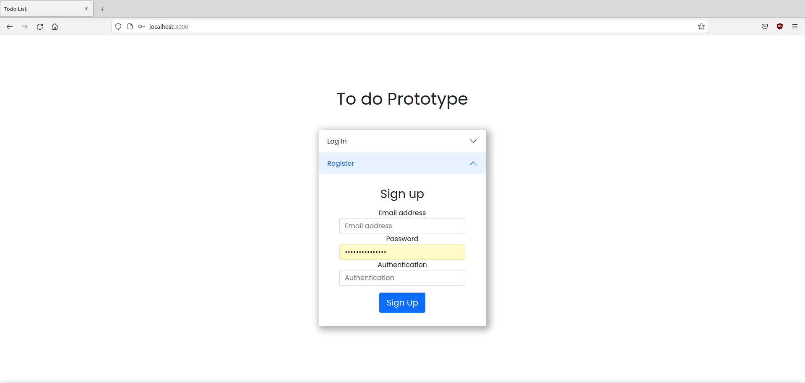
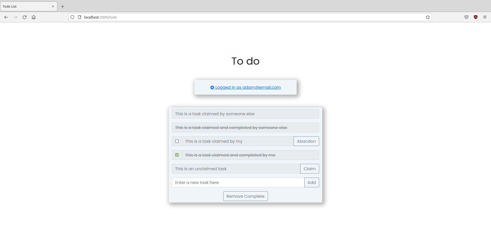
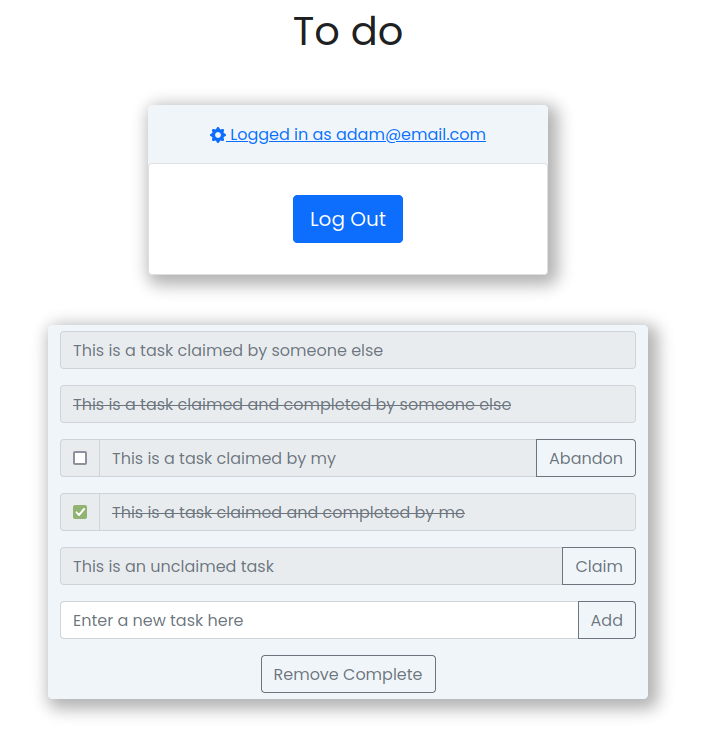

This lab introduces Cascading Style Sheets (CSS), which can be used to add styles to HTML elements. We will look at the different locations styles can be placed (inline, internal and external), the different types of tags which styles can be applied to (by tag type, id or class), and some example styles which can be applied. We’ll discuss syntax, containers, positioning and the box model, and some extra add-ins to bring our page up to date. We’ll end our discussion with Bootstrap CSS, a library made by twitter, which instantly modernizes web pages, as well as providing modernized controls.
Lab 3: CSS and Bootstrap
ENSE 374 - Software Engineering Management - Laboratory
University of Regina - Engineering and Applied Science - Software Systems Engineering
Lab Instructor: Adam Tilson
Computer running Windows, MacOS or Linux, with an Intel or AMD-based processor (x86 or x86-64) with administrator privileges.
- A modern web browser, with a strong preference for Firefox or Chrome
- A text editor, preferably VS Code
Why we use CSS
CSS is used to apply styles to our elements. This changes the way that they are rendered on the page, so they they no longer take on the default HTML which is reminiscent of the 90s.
- Before CSS, we could only style elements with HTML attributes
- This is slow and not very flexible
- What if we want to reuse the same styles across elements? Across pages?
- This is slow and not very flexible
Where to add CSS code?
CSS code can be applied inline, internal, external
- If a style conflict arises, these are the places you need to check!
Inline
- Embeds CSS code in an HTML tag using the
styleattribute. - e.g.
<hr style="width:50%;text-align:left;margin-left:0">- Tedious and repetitive - need to apply style on a per element basis
Internal
- Write CSS code inside of the
<style>tags in the<head>of the HTML document. - Applies styles on a page-by-page basis
- this is rarely optimal, we typically want site-wide styles
- e.g.
<!DOCTYPE html>
<html>
<head>
<style>
a:link, a:visited {
color: red;
text-decoration: none;
cursor: pointer;
}
a:hover {
text-decoration: underline;
}
</style>
</head>
<body>
<a href="#"> Go back to the top!</a>
</body>
</html>
External
- All of your CSS is stored in a separate file called, e.g.
css/style.css - We add a link to this style sheet in the
<head>of the HTML:
<link rel="stylesheet" href="css/style.css">
- We can add this link to all pages site-wide
What does a rule look like?
The basic CSS syntax is:
selector { property : value; }
who what how
- who do we want this to apply to, what do we want to change, how do we want to change it
How are rules applied? Cascading
Cascading means styles inherit from other styles, i.e. “cascading down”.
- Often rules will conflict, so we need to determine which style will apply, based on factors:
- Importance: you can specify important tags with
!important - Specificity: more specific rules (e.g. id’s) overrule less specific (e.g. classes, elements, or inherited)
- Calculated with a complex scoring system.
- generally:
- id > class > tag > inherited
- Source order: later rules overrule earlier ones
- If you are linking multiple style sheets, more general ones should come first, more specific ones later
- Importance: you can specify important tags with
- It is sometimes tough to compute precedence in our head!
- General heuristic: more specific rules will override less specific rules
- When learning and debugging: Use browser debug tools to see which styles are applying
Here’s a good source for info on cascading
Cascading example
Copy the following code into index.html:
<!DOCTYPE html>
<html lang="en">
<head>
<meta charset="UTF-8">
<meta http-equiv="X-UA-Compatible" content="IE=edge">
<meta name="viewport" content="width=device-width, initial-scale=1.0">
<link rel="stylesheet" href="style.css">
<style>
hr {
color: green;
}
</style>
<title>Welcome</title>
</head>
<body>
<h1>Welcome to my website!</h1>
<hr>
<p>This is my homepage on the world wide web</p>
<p class="paragraphs">I can't figure out these CSS rules!</p>
<p class="paragraphs" id="paragraph3"> Why is this so complicated?!</p>
<p style="color:blue;"> What color will this be?!</p>
</body>
</html>
And the following code into style.css
body {
color: red;
background-color: grey;
}
.paragraphs {
color: yellow;
}
#paragraph3 {
color: magenta;
}
hr {
color: black;
border: solid 10px;
}
h1 {
background-color: black;
}
This shows how rules can be placed in three different places, and how they apply, both through inheritance (body inherits through to paragraph), by order (the internal style sections comes after the linked, so it will overrule it), and specificity (id overrules class overrules inherited). Fire up the debugger (F12), use the inspector, and trace how the CSS rules are overruled!
Debugger
In FireFox, you can open up the debugger with F12. You can use this to select elements and see which styles are applying:

Default Style Sheet
Every page has styles, unless you specify changes they uses the default style This is what causes default styled HTML to look like it’s from the 90’s It can be useful to understand these default styles to know which changes to make:
- Here is a link to descriptions of the default values for a CSS
- Here is a link to the CSS in a style sheet file.
Syntax Checking
VS Code checks your syntax as you type, look for common errors (bottom left)
Organization
It’s best practice to Alphabetize Selectors and Properties - it will make yours or your colleagues life easier at some point Alternately, you may wish to group selectors by type, e.g. Tag, Class, ID
Comments
CSS uses C-style comments:
h1 {
/* Make h1's red. */
color: red;
}
Where to get help?
This is a great tutorial, which acknowledges how wonky CSS can be sometimes:
Next let’s examine some of the details which make CSS so powerful (and also so tricky!)
Selectors
Elements can be selected by a number of rules. Some rules select individual elements, others select groups. Further, some inheritance rules apply which will propagate through to children elements.
Tag Selectors
Also known as element selectors. Applies style to all tags of that type. Very broad strokes.
h1 {
color: red;
}
This code will apply to all <h1> tags.
Class Selector
Selects all elements of a given class.
- You can assign elements to a class in the HTML code using the HTML attribute
class="<class_name>" - Multiple classes may be applied to a single object, separated by a space.
- it’s best practice to only use one custom class, and attach others as needed by frameworks such as Bootstrap, e.g.
class="<custom_class> <bootstrap_class>
- it’s best practice to only use one custom class, and attach others as needed by frameworks such as Bootstrap, e.g.
- target them in CSS with the selector:
.<class_name>
e.g.
...
<h1 class="headers"> Lab 3 </h1>
...
.headers {
color: red;
}
This will apply to all tags that have the headers class assigned to the class list.
Id Selector
Selects the single element identified with a particular ID.
- You can assign elements an ID in the HTML code using the HTML attribute
id="<name>". - ID’s need to be unique, that is, only one element in a page may have a given ID.
- Target this element in CSS with the selector
#<id>
e.g.
...
<h1 id="my-heading"> Lab 3 </h1>
...
only ever one id selector per object
#my-heading {
color: black;
}
Pseudo Classes
Some elements have pseudo-classes that are active only during interaction, e.g. link hover e.g.
a:hover {
color:red;
}
Combining Rules
We can very specifically target an element by combining rules
- If we want to combine multiple selectors to select for a single element or set of elements, combine them without spaces
e.g. apply this style to target all h1’s that have the header class:
h1.header {
color: red;
}
We can also find elements which are descendants of an element:
e.g. select all <p> elements that are children of a <section> tag:
section p {
color: yellow;
}
There are other rules, for example selecting a particular child or sibling. Check out this reference for more info.
Simple is better - Before you commit to complicated combinational logic, decide if a custom class or ID would be better! Make your life easier and your code more traceable wherever possible!
Common Properties and Values:
Color:
- the
colorandbackground-colorproperties specify the foreground and background colors respectively - color values can be given by keyword, or hex of the style:
#RRGGBB- e.g. red is
#FF0000, but will be very hard on the eyes, as we’ve seen! - When starting, it’s strongly recommended not to find colors by experimentation, instead look at a palette app:
- e.g. red is
- If you can’t tell if your styles are applying, start by applying something radical, like
background-color: magenta.- Thus you know the sheet is linked properly!
Borders:
- the
borderproperty- generalized properties apply to the whole border
- specialized properties for individual sides,
- A shorthand style that defines many properties and values in one line
- general properties:
border-style: solid;- Overall style. values are keywords - dotted, dashed, solid, double, groove, ridge, inset, outset, none, hiddenborder-width: 5px;- values are in px, e.g. 5px, 15px. You can also define the top, right, bottom and left widths in one statement. (clockwise from 12 o’clock)border-color: red;- values are colorsborder-radius: 10px;- curves the edges. value in px, e.g. 5px
- specific properties:
border-top-style: dashed;- changes the style of the top sideborder-left-color: blue;- changes the color of the left side- Many other combinations are available
- shorthand style
- defines the width, style and color properties in one shot
border: width style colorborder: 5px solid black;
- defines the width, style and color properties in one shot
e.g.
/* awful, awful style, but effective for seeing changes! */
p {
border-style: dotted dashed solid double;
border-color: blue;
border-top-width: 10px;
border-radius: 3px;
}
Sizing:
- instead of relying on an objects content to dictate size, set it manually.
- May not always work for all elements depending on Display settings.
widthmax-widthheightmax-height- the units can be in px, percent, mm.
0doesn’t need units. Learn more about the many units here
- the units can be in px, percent, mm.
Text:
font-family: values are strings, with later values being fallbacksfont-size: can use many units, rem is probably safest, where one REM is the size of anMat the root scaling. 1 rem = 16pxfont-weight: numeric, where thinner to thicker ranges from 100 to 900text-decoration: underline, line-through, overline, etc. e.g.
@import url('https://fonts.googleapis.com/css2?family=Poppins:wght@300;400;500&display=swap');
p {
font-family: 'Poppins', sans-serif;
font-size: 1.2rem;
font-weight: 300;
}
Div and Span
Div and Span are HTML elements that exists only as a container for containing other elements
- can be used to apply CSS to elements
<div>a vertical container, blocking<span>is a horizontal container, non-blocking (inline)
Box Model
The total space that an object takes is more than you might think, based on the CSS Box Model:

- Individual objects have a required size, (implicit or defined
widthandheight), and as they expand objects around them are pushed out of the way. - But the total sizes of the element add the margin, padding, border and content to give the total dimensions of the element.
- Margin and padding are buffer zones around the border.
Addition example:
-
10px border + 20px padding + 20px margin = 50px * 2 sides = 100px + content
-
When setting margins, padding and border, the same four-sided shorthand can be used as we saw in borders, clockwise from the top:
- top, right, bottom, left
- remember: clockwise from 12 o’clock
- if only 1 value is given, it expands as (top=1, right=1, bottom=1, left=1)
- if 2 values are given, they expand as (top=1, right=2, bottom=1, left=2)
This box model even applies to the body tag, which has a default non-zero margin.
- This is why by default elements aren’t positioned in the upper left of the page
-
you will need to set this to 0 if you need something in the corner, like a header!
- Padding will stretch the background color, whereas margin will add white around it
Flow and the CSS Display Property
The Display property dictates how elements flow around this element:
display: block;- push the next content to the next line. e.g. the default behaviour of<div>,<p>display: inline;- let info come beside it. e.g. the default behaviour of<a>,<em>display:inline-block;- A hybrid. It’s like inline, but it can block a bit of height too. e.g. the default behaviour of<image>display:none;- don’t display it. It’s gone. Not just hidden. Items will not flow around it either, just take up it’s place.visibility: hidden;will instead allow items to flow around it.
- There’s also a new flexbox model, designed to act as an alternative to this, but I think Bootstrap (which we’ll discuss later) accomplishes this better.
CSS Positioning
Positioning is derived from HTML and CSS
- HTML should govern hierarchy and order
- order means later elements are added to the flow after earlier elements
- Hierarchy means child elements appear “inside” of parents
- Flow still applies
- CSS positioning beings after HTML rules are complete
- Positioning rules exist
- Depending on display properties, sometimes elements overlap
- Z-index refers to the “depth” of objects, with higher numbers appearing on top, and lower or negative numbers behind.
<div> <h1> <span> Hello </span > More text</h1> </div>
Positioning Rules
Positioning can be derived from the HTML, or overridden, using the position property, with values:
position: static;- use the HTML rules for positioningposition: relative;- from the static position, offset the element by a specified x,y coordinate value, eg. (3, 5).- does not disrupt flow
position: absolute;- position the element by absolute coordinates relative to its parent- does disrupt document flow
position: fixed;- always in the same place as we scroll, e.g. a fixed header bar
Centering Elements
A common operation which can be harder than you might think!
For non-blocking elements
text-align : center;
For blocking elements:
max-width : 1000 px; /* or whatever is appropriate*/
margin : 0 auto 0 auto; /* automatic centering left and right *
You could also have instead done:
margin: 0 auto;
Which will apply the 0 to both top and bottom, and auto to both left and right.
Floating and Clearing
Floating allows images to “float” around text.
- values: none, left, right are common
If something floats by default, you can remove float with the “clear” property. eg:
float: left;
clear: left;
Floating can be overused, easy to abuse. Be careful. Some help with Float
Bootstrap is a library originally developed by Twitter to modernize and standardize web development
- At the simplest, it can be seen as an update to the “default style sheet” which will automatically make an unstyled paged look much more modern
- Additionally, there are a number of pre-defined classes which can be attached to our HTML elements to automatically give them modern styles
- The Current Version, v5, was released September 2020, and broke many things from my lab last year!
How to install it?
Rather than manually installing it and serving it from our server, we can have the user’s browser fetch it from a Content Delivery Network (CDN). A CDN distributes common resources on distributed servers around the world, ideally one nearby the user, and the may even have a cached copy on their own computers. (Similar to DNS) Typically employ proprietary load balancing algorithms that detect where things are in-demand and ensures local copies exist nearby!
This is useful for two reasons: it reduces bandwidth for our server, and if the user has previously downloaded it for any other website, it will be cached on their computer, and load instantly. The only problem is, if the CDN ever goes down, our styles will not load. But then again, if the CDN goes down, the internet likely has bigger problems than just your web page.
Grab a link to it from the CDN, and add the code for it into your HTML file:
As with our spreadsheets, the link goes in the head, before our custom styles. (This will allow our custom styles to override theirs as needed.)
<link href="https://cdn.jsdelivr.net/npm/bootstrap@5.0.2/dist/css/bootstrap.min.css" rel="stylesheet" integrity="sha384-EVSTQN3/azprG1Anm3QDgpJLIm9Nao0Yz1ztcQTwFspd3yD65VohhpuuCOmLASjC" crossorigin="anonymous">
You will also need to paste a JavaScript library into your HTML. This script tag is added in the last line of the body of the document.
<script src="https://cdn.jsdelivr.net/npm/bootstrap@5.0.2/dist/js/bootstrap.bundle.min.js" integrity="sha384-MrcW6ZMFYlzcLA8Nl+NtUVF0sA7MsXsP1UyJoMp4YLEuNSfAP+JcXn/tWtIaxVXM" crossorigin="anonymous"></script>
What can it do?
Check out the Examples on Bootstrap’s website which includes pages styled using Bootstrap elements
You can also see many examples in the Bootstrap cheat sheet:
Where to get help?
The official docs are excellent
Responsive Design
Today over half of the visits to your website are from mobile devices. How will your site adapt:
You could…
- Do nothing and suffer the consequences.
- Create a Dedicated mobile site.
- Responsive Design,.
Consequences of doing nothing: higher bounce rate. Google PageRank suffers.
Dedicated mobile site is a lot of work and maintenance. Responsive design is better.
Bootstrap encourages Mobile First design, and their classes are all automatically responsive!
Some elements:
Bootstrap Containers
The container class is assigned to a div to make the contents automatically responsive regarding the size of the viewport.
- An easy way to make things look pretty good without caring too much about the details
- take up 80% width, responsive
- By default has some jarring jumps at different breakpoints
<div class="container">
<p>This is some content that is inside of a container. It should automatically resize as you resize the window. This is some content that is inside of a container. It should automatically resize as you resize the window. This is some content that is inside of a container. It should automatically resize as you resize the window. This is some content that is inside of a container. It should automatically resize as you resize the window.</p>
</div>
container-fluid – Always takes up 100% of the screen width, which is visible when resizing
We are not stuck with the styles Bootstrap gives us, we can also further customize with our own custom CSS:
.container-fluid {
padding: 30px;
}
Bootstrap Buttons
Let’s add some buttons to our text:
<button>Subscribe</button>
<button>Learn More</button>
Even with Bootstrap they are still kind of boring.
We need to attach the appropriate Bootstrap classes. Looking at the Bootstrap documentation…
We can see primary buttons, outline buttons. Let’s try outline buttons…
<button class="btn btn-outline-primary">Subscribe</button>
<button class="btn btn-outline-secondary">Learn More</button>
Say we’re not super happy with how these buttons look. We can use the box model to figure out how they are automatically styled in Bootstrap…

And we can edit these until we are happy it. Then we can record the changes we like in our custom CSS:
.btn {
padding: .5rem 1rem;
}
Bootstrap Grid
The Bootstrap Grid aligns elements in a grid, and allows responsive resizing, for example, show 4 grid elements on a desktop site, 3 on a tablet, and 1 on a mobile device.
The HTML:
- The outer div’s assigns the class row
- the inner divs assign has class col
simplest version
<div class="row">
<div class="col">
<p>I'm in a grid!</p>
</div>
<div class="col">
<p>I'm also in a grid!</p>
</div>
</div>
If we want to use responsive design, we need to attach the number of units to each grid element
The total grid space is divided into 12 “units”, and our column can take up as many units as we want.
- If we wanted our column to take up 50%, this would be 6 units.
- By using 12 base units, is easy to have 2, 3, 4 or 6 columns.
Let’s look at 3 columns which take 25% of the screen:
<div class="row">
<div class="col-3">
<p>I'm in a grid!</p>
</div>
<div class="col-3">
<p>I'm also in a grid!</p>
</div>
<div class="col-3">
<p>A third element!</p>
</div>
</div>
- We can fix our number of columns with subclasses like col-3
- We can also specify how cols will work depending on screen size
We can also specify different units depending on device.
- e.g. if we wanted: desktop 4 cols, ipad 3 cols, mobile 2 cols
- we would use:
class="col-lg-3 col-md-4 col-sm-6"
Example:
<div class="row">
<div class="col-sm-6 col-md-4 col-lg-3">
<h1>grid</h1>
<p>I'm in a grid!</p>
</div>
<div class="col-sm-6 col-md-4 col-lg-3">
<h1>grid</h1>
<p>I'm also in a grid!</p>
</div>
<div class="col-sm-6 col-md-4 col-lg-3">
<h1>grid</h1>
<p>Another grid example!</p>
</div>
<div class="col-sm-6 col-md-4 col-lg-3">
<h1>grid</h1>
<p>A final grid column!</p>
</div>
</div>
Note: If a viewport column size is not specified, it defaults to 100% width.
Jumbotron
Other components in Bootstrap require multiple HTML elements to work. Generally speaking for these I tend to start from samples to find the code, and then make changes as needed.
The JumboTron is a large block element near the top of the page for first impressions Sometimes called a “Hero”. It makes a good “Hello World” element to immediately see the effects of Bootstrap
- Unfortunately, as of Bootstrap 5, no longer a dedicated element
- The following is grabbed from the Bootstrap 5 sample source code:
Example:
<div class="p-5 mb-4 bg-light rounded-3">
<div class="container-fluid py-5">
<h1 class="display-5 fw-bold">Custom jumbotron</h1>
<p class="col-md-8 fs-4">Using a series of utilities, you can create this jumbotron, just like the one in previous versions of Bootstrap. Check out the examples below for how you can remix and restyle it to your liking.</p>
<button class="btn btn-primary btn-lg" type="button">Example button</button>
</div>
</div>
Each of the attached elements and classes serves a purpose. We've seen some of these classes before, but not all. If you want to figure out what one does, let's say `py-5`, we can look it up in the Bootstrap Docs.
(Or google `Bootstrap 5 py-5`, [which takes you to spacing...](https://getbootstrap.com/docs/5.0/utilities/spacing/))
Here we can see that this is setting padding in the y direction to 3 spacer units. (Where the spacer size is defined in SASS, something we don't look at in this lab.)
Navbar
A navigation element. At it’s core it’s an unordered list, wrapped in various div’s. This one is modified from the examples page:
<header class="pb-3 mb-4 border-bottom">
<nav class="navbar navbar-expand-md navbar-dark fixed-top bg-dark">
<div class="container-fluid">
<a class="navbar-brand" href="#">Carousel</a>
<button class="navbar-toggler" type="button" data-bs-toggle="collapse" data-bs-target="#navbarCollapse" aria-controls="navbarCollapse" aria-expanded="false" aria-label="Toggle navigation">
<span class="navbar-toggler-icon"></span>
</button>
<div class="collapse navbar-collapse" id="navbarCollapse">
<ul class="navbar-nav ms-auto mb-2 mb-md-0">
<li class="nav-item">
<a class="nav-link active" aria-current="page" href="#">Home</a>
</li>
<li class="nav-item">
<a class="nav-link" href="#">Link</a>
</li>
<li class="nav-item">
<a class="nav-link disabled" href="#" tabindex="-1" aria-disabled="true">Disabled</a>
</li>
</ul>
</div>
</div>
</nav>
</header>
Carousel
A container which automatically cycles content over time, typically used for displaying images like a slideshow
Bootstrap Cards
A self-contained group of elements, typically includes an image, text
- separated into a header, body and footer region
- cards are stored in a “card deck” and stacks them appropriately
- Less flexible than Bootstrap grid for responsive design
Input Groups
Sometimes certain inputs logically go together - you will certainly see this in our lab exercise! Check out input groups for some examples of how you might be able to put them together
Responsive Breakpoints with CSS Media Queries
If you ever need to style responsive CSS without bootstrap, you can use CSS Media Queries, a CSS modifier which checks something about the media (screen) and applies a style based on this:
@media screen (min-width: 900px) {
/* Your CSS here */
}
Think of it like an if block, these styles will only apply if these conditions are met.
Bootstrap defines 4 cutoffs: 576, 768, 992, 1200px
| object | size |
|---|---|
| phones in portrait | <576 |
| phones in landscape | >576, <768 |
| tablets | >768, <992 |
| desktops | >990, <1200px |
| ultrawides | >1200px |
Misc Styling Stuff
Favicon
The icon which appears in your browser tab is a file called favicon.ico, and it is stored in the root directory of your website. You can make it with software like GIMP
<link rel="icon" href="favicon.ico">
In modern browsers, you can even use an SVG, e.g. made in Adobe XD. Export a drawing as SVG, and use:
<link rel="icon" type="image/svg+xml" href="/favicon.svg">
Fonts
Fonts on the web are typically grabbed from the Google Fonts CDN, in a similar fashion to Bootstrap
- I’m personally a big fan of Geometeric Sans Serif fonts
- It’s worth learning about a few serif and sans fonts, and knowing which ones to use for accent text and which ones for body text
Some fonts I like:
- Montserrat, Raleway, Poppins, Lexend (Geometric Sans)
- Open Sans, Roboto, Lato (Humanistic Sans)
- Merriweather, Lora, Roboto Slab (Serif) Some of the best Google Fonts from Awwwards
The easiest way to use a Google font is with a CSS import statement:
- Find a font you like on Google Fonts
- Select the weights you want to use on your webpage
- Select the @import option
- Copy the @import line into yous CSS
- Use the font-family rule as needed

Bootstrap Icons
Bootstrap has created a set of SVG icons you can use in your sites completely for free. Just copy the SVG code right into your HTML page
For this lab assignment, we will continue the work from last lab, by styling our prototype to-do list.
This style has been slightly modified from last week to compensate for the style changes in Bootstrap 5.




Your task is to add Bootstrap and Custom CSS to your HTML files from last lab to match this style. You may need to add to or change your HTML for this to work.
Recommended approach
- Look at the pictures to identify elements
- Use the Bootstrap documentation to find appropriate elements
- Add the required Bootstrap libraries from the CDN links
- Combine the appropriate Bootstrap HTML to make it look right (containers, classes, samples, etc.) with your HTML elements from last week, making changes as needed
- Add custom CSS to account for anything that does not look right. You can also attry attaching the Bootstrap styles for adding padding
FAQ:
Which font are you using:
- Poppins (One of my faves)
Which elements interact:
- On the login page, the Login and Register sections collapse to reveal the other
- On the todo page, when the user’s name is clicked on, the log out section drops down
Where’s the gear icon from?
- Here: Bootstrap gear icon
- Copy and paste the SVG code into your HTML as if it were an element
Can I modify the style?
- Yes, but you will lose grades if it is deemed to be of lower complexity and/or usability. For example, trying different colors styles is fine as it does not reduce complexity or usability.
How will it be graded? Some things the TA will look for include
- Appropriate HTML elements included for all pages
- Bootstrap properly included, with appropriate Bootstrap classes used
- General layout of Login, Register and Todo pages
- Each of the different types of todo list task states appropriately styled
- Some specific styling details, which you’ll have to figure out yourself
- This lab will be submitted via URCourses.
- Please submit any HTML files and CSS files.
- You do not need submit the Bootstrap library or any dependencies which can be fetched from the CDN.